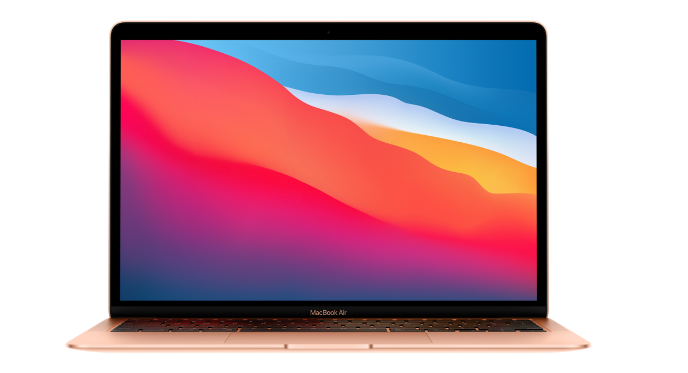
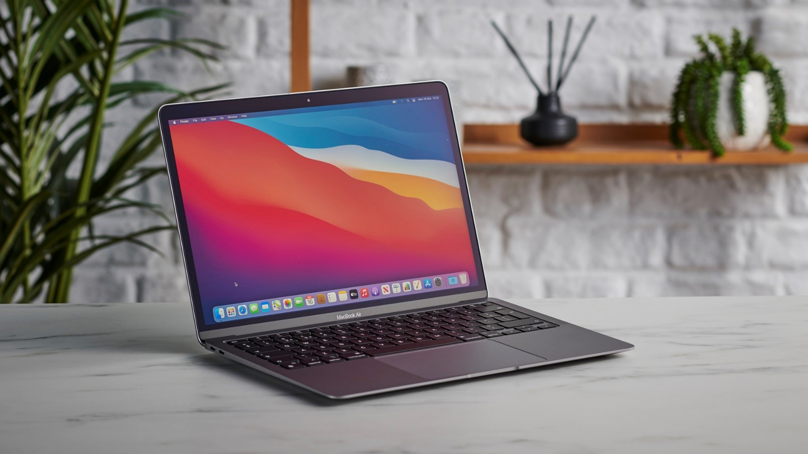

Apple M1 - MacBook Air 13" 256GB 2020 - Chính hãng Apple Việt Nam
Tất cả Macbook chính hãng Apple Việt Nam, được phân phối tại Hoàng Hà Mobile đều được nhập trực tiếp từ Công ty TNHH Apple Việt Nam. HoangHa Mobile là nhà bán lẻ ủy quyền chính thức của Apple tại Việt Nam.
Mua MacBook Air M1 chính hãng giá tốt tại Hoàng Hà Mobile
Năm 2020, Apple đã nâng cấp chiếc MacBook Air của mình với một hiệu năng vô cùng mạnh mẽ, tích hợp chip M1 thuộc thế hệ Apple Silicon có khả năng tối ưu hoá tốt, đem lại trải nghiệm sử dụng, làm việc, học tập và giải trí ấn tượng cho người dùng.
Thiết kế nhỏ gọn. Màn hình Retina sắc nét
Là một chiếc ultrabook cao cấp, MacBook Air mang trên mình tất cả thẩm mỹ tinh tế của Apple trong thiết kế sản phẩm. MacBook Air M1 được hoàn thiện từ chất liệu nhôm nguyên khối, không chỉ nhẹ mà còn rất sang trọng. Trọng lượng chỉ 1,29kg cũng giúp người dùng tiện lợi mang đi sử dụng ở mọi nơi. Khách hàng có thể lựa chọn ba phiên bản màu khác nhau phù hợp với cả tính mỗi người, bao gồm xám, bạc và vàng.
Cảm giác mở máy bằng một tay vẫn giữ được sự mượt mà, cho thấy khả năng hoàn thiện bản lề cực tốt của Apple. Khi mở máy ra, người dùng sẽ thấy bàn phím Magic Keyboard có hành trình phím 1mm, hỗ trợ đèn nền và TouchPad có kích thước lớn, giúp các thao tác trên máy trở nên trơn tru và có phản hồi tốt. Hai dải loa stereo được bố trị bên cạnh bàn phím, có âm lượng và chất âm tốt, hỗ trợ người dùng mọi tác vụ giải trí. Đặc biệt, nhờ không có quạt gió nên người dùng sẽ không tìm thấy khe tản nhiệt trên thiết bị này, tạo ra cảm giác thiết kế liền mạch cho sản phẩm. MacBook Air được trang bị màn hình Retina kích thước 13,3 inch có độ phân giải 2560x1600. Màn hình này hỗ trợ công nghệ True Tone, dải màu rộng P3 và có độ sáng lên tới 400 nit, đem lại màu sắc và độ tương phản tốt ngay cả khi làm việc trong không gian có ánh sáng mạnh như ngoài trời nắng.

Hiệu năng hàng đầu. Thời lượng pin lên tới 18 tiếng
Lần đầu tiên trong lịch sử dòng MacBook, Apple chia tay Intel để sử dụng vi xử lý riêng do chính mình sản xuất mang tên M1. Sở hữu sức mạnh tối tân, chip M1 giúp MacBook Air có hiệu năng vượt trội so với nhiều mẫu laptop hiện có trên thị trường. Chip M1 là một SoC được tích hợp CPU, GPU, Neural Engine, I/O và nhiều bộ phận xử lý khác trên một con chip duy nhất. Đây là con chip chạy trên tiến trình 5mm với 16 tỷ bóng bán dẫn, hứa hẹn đem lại hiệu năng nhanh hơn tới 3,5 lần và khả năng xử lý đò hoạ tốt hơn 5 lần so với thế hệ MacBook Air trước đây. Người dùng có thể tự tin thực hiện mọi tác vụ hàng ngày trên chiếc máy tính của mình, từ công việc văn phòng nhẹ nhàng, cho đến xử lý video và chơi game có đồ hoạ cao mà không làm